2025-2026学年七年级数学上学期第一次月考卷
提升卷·考试版
（考试时间：120分钟 试卷满分：120分）
注意事项：
1．答卷前，考生务必将自己的姓名、准考证号填写在答题卡上。
2．回答选择题时，选出每小题答案后，用铅笔把答题卡上对应题目的答案标号涂黑。如需改动，用橡皮擦干净后，再选涂其他答案标号。回答非选择题时，将答案写在答题卡上。写在本试卷上无效。
3．考试结束后，将本试卷和答题卡一并交回。
4．测试范围：北师大版2024七年级上册第一章~第二章。
一、选择题（本大题共10小题，每小题3分，共30分）
1．下列物体中，形状类似圆锥的是（ ）
A． B．
B． C．
C． D．
D．
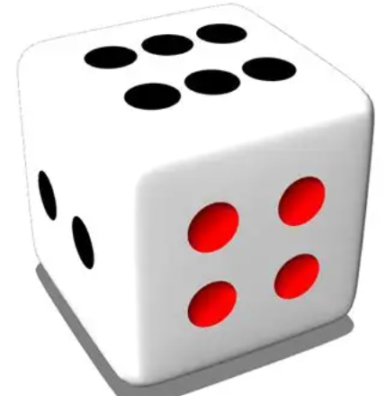
2．北宋沈括在《梦溪笔谈》中提到“算法用赤筹，黑筹，以别正，负之数”，古人用红色，黑色算筹分别表示具有相反意义的正数和负数，下列各数中是正数的是（ ）
A． B．
B． C．1 D．
C．1 D．
3．某物体如图所示，从上面看到的图是（ ）

A．
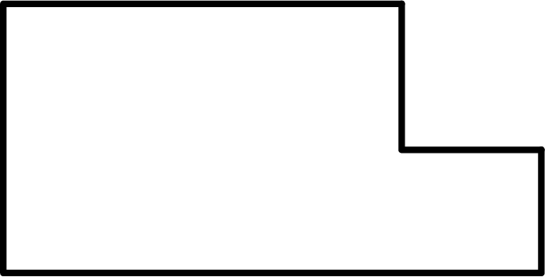
B． C．
C． D．
D．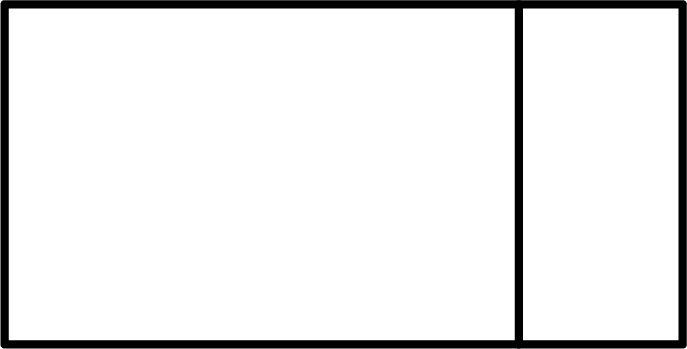
4．原子钟是以原子的规则振动为基础的各种守时装置的统称，其中氢脉泽原子钟的精度达到了 万年误差不超过
万年误差不超过
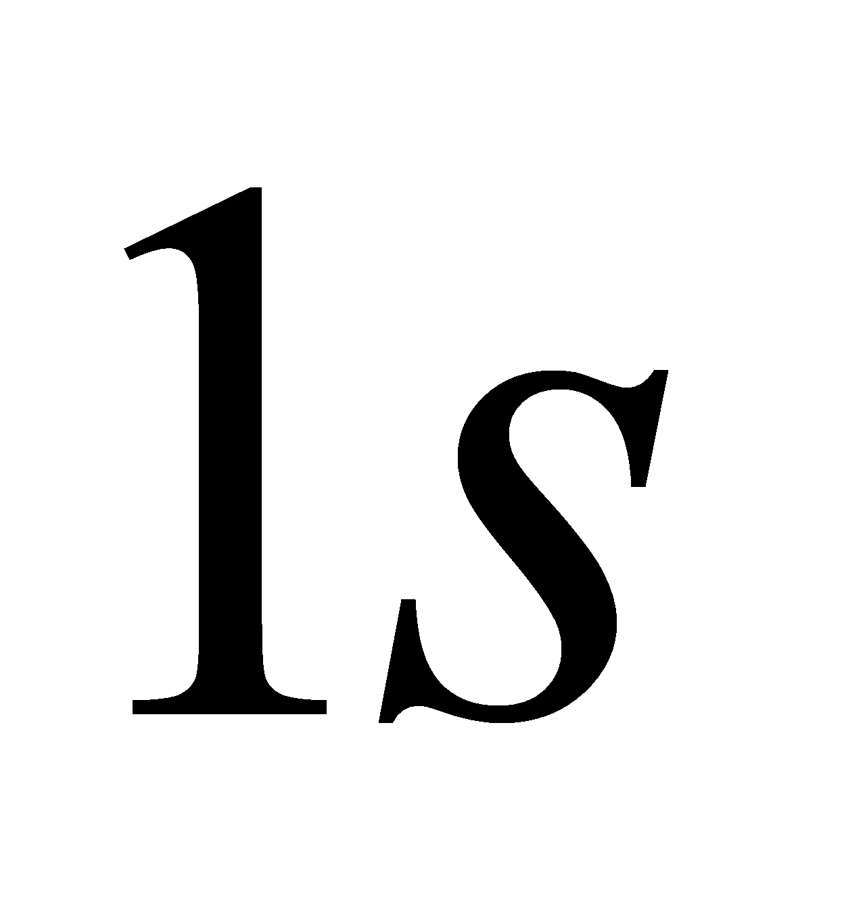
．数据万用科学记数法表示为（ ）.A．
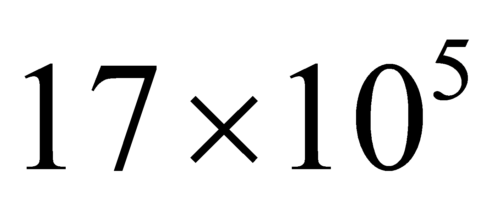
B．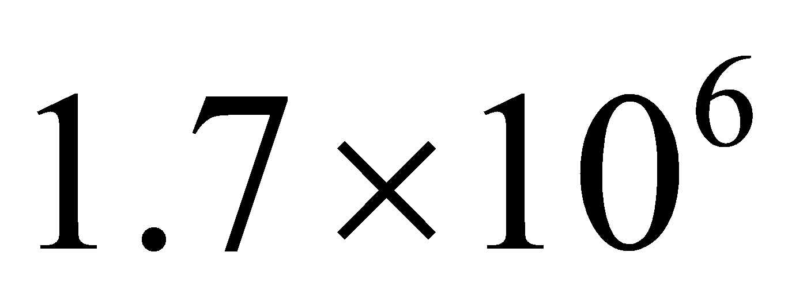
C． D．
D．
5．如图所示为几何体的平面展开图，则从左到右，其对应的几何体名称分别为（ ）

A．正方体，圆锥，圆柱，三棱锥 B．圆锥，正方体，四棱锥，圆柱
C．正方体，圆锥，圆柱，四棱柱 D．正方体，圆锥，圆柱，三棱柱
6．在， ，
， ，
， ，
，
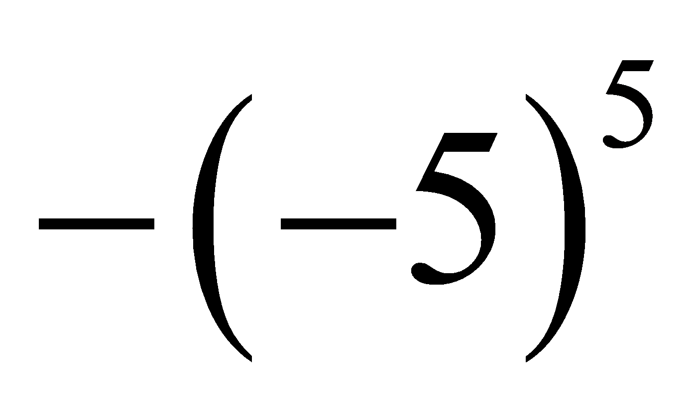
中，负数的个数有（ ）A．4个 B．3个 C．2个 D．1个
7．下列计算正确的是（ ）
A． B．
B．
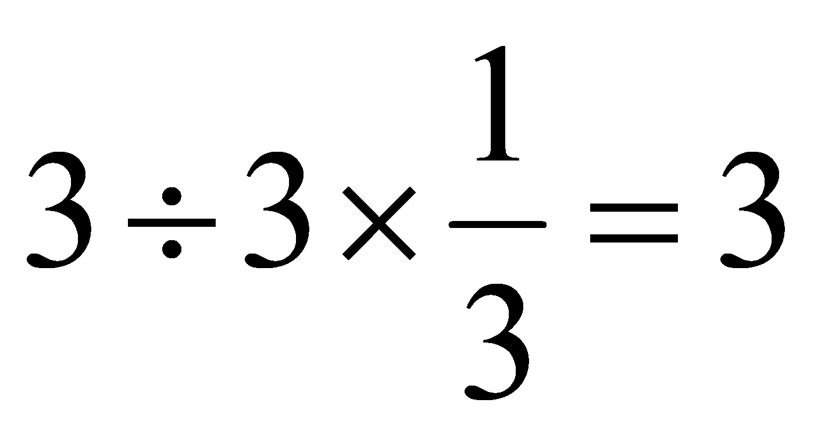
C． D．
D．
8．小欣用纸（如图）折成了一个正方体的盒子，里面放了一瓶墨水．下面选项中，盒子里有墨水的是（ ）
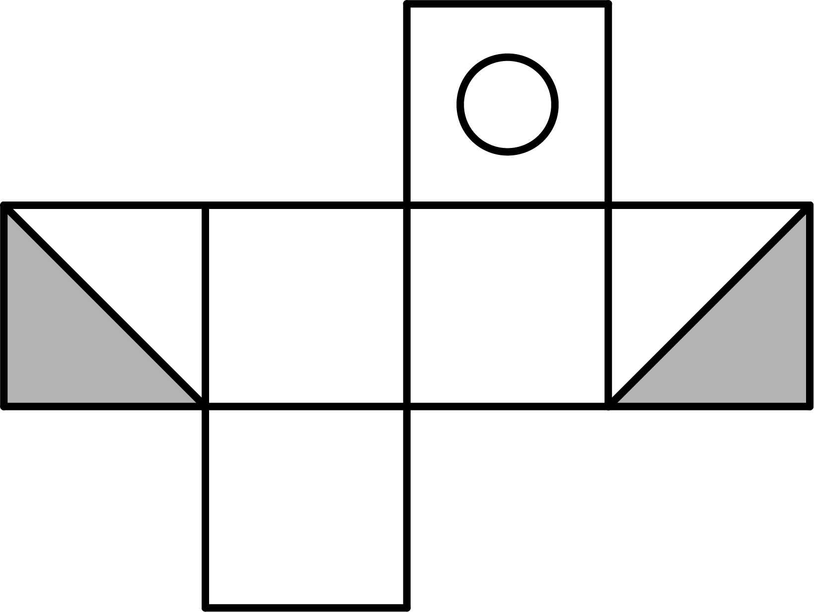
A．
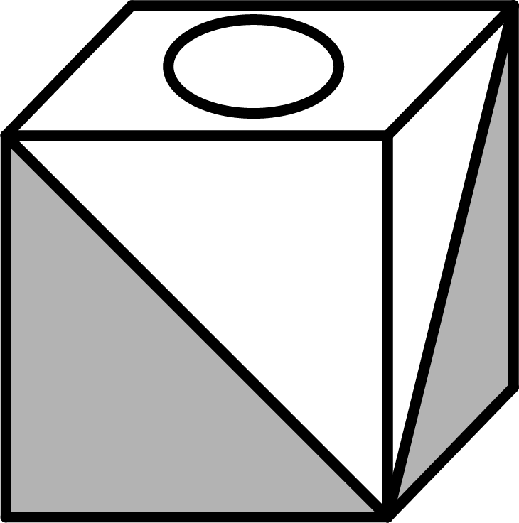
B．
C． D．
D．
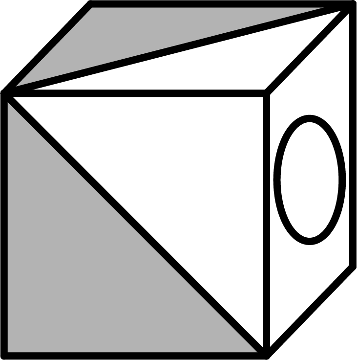
9．如图，点A、B、C在数轴上表示的数分别为a、b、c，且 ，则下列结论中：
，则下列结论中：
① ；②
；②
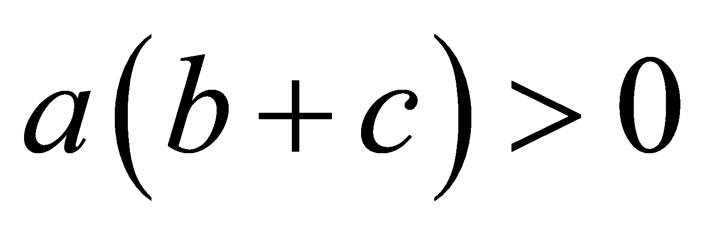
；③ ；④
；④ ．
．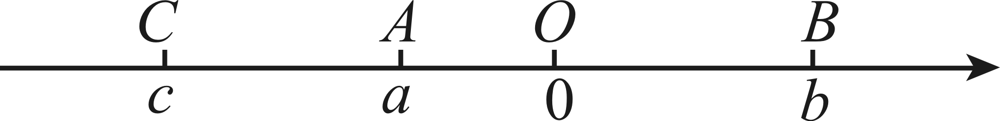
其中正确的个数有 （ ）
A．1个 B．2个 C．3个 D．4个
10．如图，是由一些完全相同的小立方块搭成的几何体从上面和从左面看得到的形状图，则搭成这个几何体的小立方块的个数是 （ ）

A．4个或5个 B．5个或6个
C．6个或7个或8个 D．7个或8个或9个
二、填空题（本大题共6小题，每小题3分，共18分）
11． 的相反数是 ，
的相反数是 ， 的倒数是 ，
的倒数是 ， 的绝对值是 ．
的绝对值是 ．
12．流星在天空划出一条线，用数学知识解释为点动成线，则直升机的螺旋桨高速旋转起来形成一个“圆面”，用数学知识解释为 ．
13．某正方体的每一个面上都有一个汉字，如图是它的一种表面展开图，那么在原正方体的表面上，与“洗”字相对的面上的汉字是 ．

14．图①为一个长方体，其内部是一个形状规则的空心几何体，用一个平行于底面的截面自下而上截这个长方体依次得到如图②所示的截面图，则这个长方体内空心部分的几何体可能为 ．

15．按如图所示的程序进行计算，如果输入的数是18，那么最后输出的结果为 ．
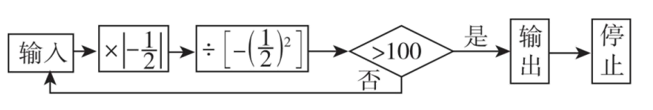
16．若 互为相反数，
互为相反数，
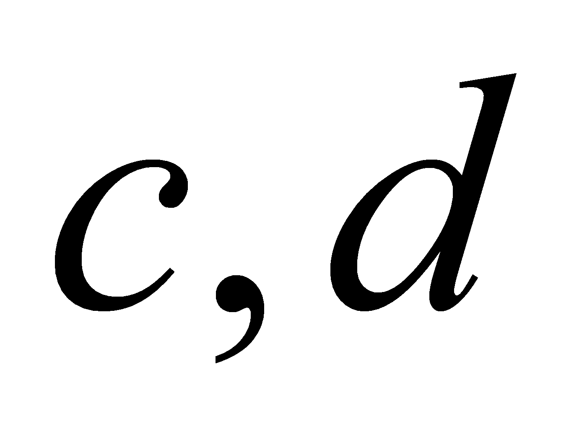
互为倒数， 的绝对值为4，则
的绝对值为4，则 的值为 ．
的值为 ．三、解答题（第17，18，19，20题，每题6分；第21，22，23题，每题8分；第24，25题，每题12分；共9小题，共72分）
17．计算：
(1)
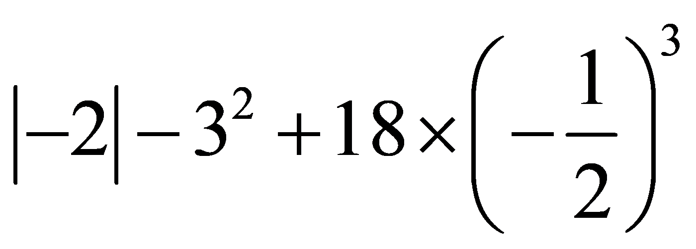
(2)
18．在如图所示的数轴上表示下列各数：
 ，
，
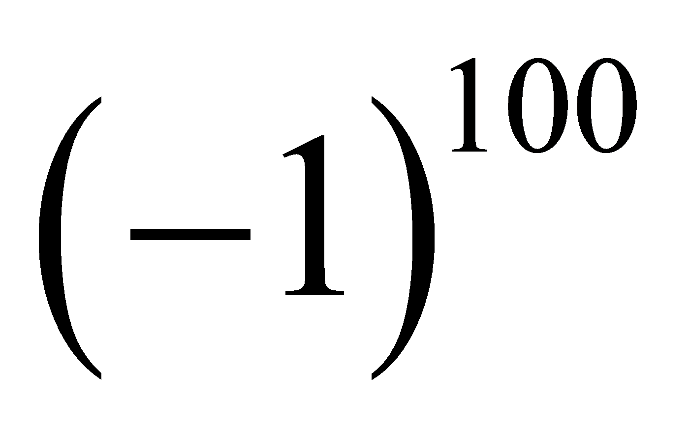
，−−−1.5， ，
，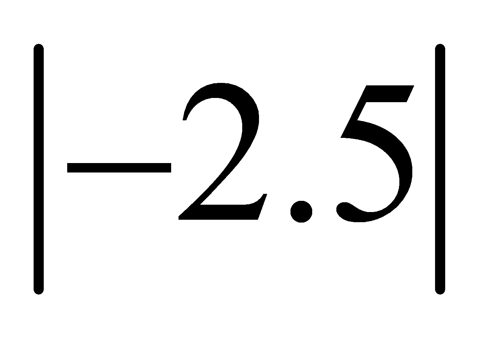
．
19．由大小相同的小正方体搭成的几何体如图所示，请在方格中画出从正面、上面和左面看到的该几何体的形状图．

20．如图所示是一个几何体的表面展开图．
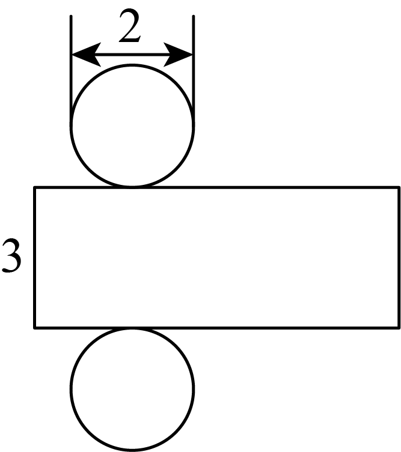
(1)该几何体的名称是______，其底面半径为______．
(2)根据图中所给信息，求该几何体的侧面积和体积．（结果保留 ）
）
21．某食堂购进10袋大米，每袋以20千克为标准，超过的部分记为正，不足的部分记为负，称重记录如表：
与标准重量的差（单位：千克） |
|
| 0 | 2 | 3 |
袋数 | 2 | 3 | 1 | 3 | 1 |


(1)这10袋大米的总重量与标准总重量相比，多或少多少千克？
(2)若大米的单价是每千克5元，则食堂购进大米总共花多少钱？
22．用“ ”规定一种新运算：对于任意有理数
”规定一种新运算：对于任意有理数 和
和 ，规定
，规定 ，如：
，如：
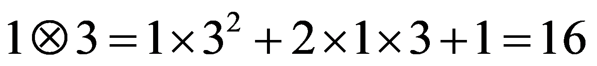
，求：(1)求 的值．
的值．
(2)求 的值．
的值．
23．下图所示的是由直角三角形和正方形拼成的四边形．
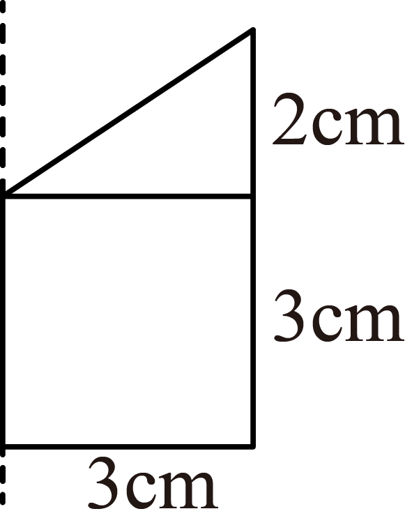
(1)将这个四边形绕虚线旋转一周，可以得到一个立体图形，这能说明的事实是________（填序号）．
①点动成线； ②线动成面； ③面动成体．
(2)求得到的立体图形的体积（结果保留 ）．
）．
24．阅读材料题：由平的面围成的立体图形又叫做多面体，有几个面，就叫做几面体．三棱锥有四个面，所以三棱锥又叫四面体；正方体又叫做六面体；有五条侧棱的棱柱又叫做七面体．
(1)探索：如果把一个多面体的顶点数记为V，棱数记为E，面数记为F，填表：
多面体 | V | F | E |
|
四面体 | 4 | 6 | ||
长方体 | 6 | 2 | ||
五棱柱 | 10 | 7 | 15 | 2 |

(2)猜想：由上面的探究你能得到一个什么结论？
(3)应用（2）的结果对所有的多面体都成立，伟大的数学家欧拉证明了这个关系式，这个关系式叫做欧拉公式．根据欧拉公式，想一想会不会有一个多面体，它有10个面，30条棱，20个顶点？
25．定义：数轴上的三点，如果其中一个点与近点距离是它与远点距离的 ，则称该点是其他两个点的“倍分点”．例如数轴上点A，B，C所表示的数分别为
，则称该点是其他两个点的“倍分点”．例如数轴上点A，B，C所表示的数分别为 ，0，2，满足
，0，2，满足
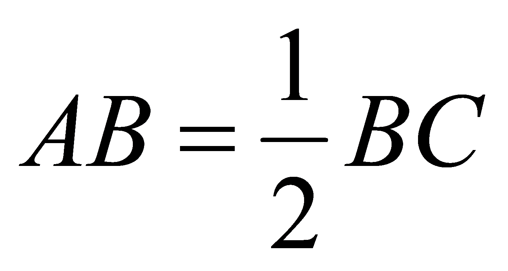
，此时点B是点A，C的“倍分点”．已知点A，B，C，M，N在数轴上所表示的数如图所示．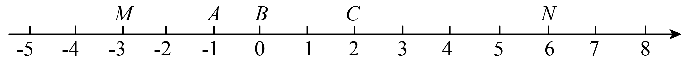
(1)A，B，C三点中，点 是点M，N的“倍分点”；
(2)若数轴上点M是点D，A的“倍分点”，则点D对应的数是 ；
(3)若数轴上点N是点P，M的“倍分点”，且点P在点N的右侧，求此时点P表示的数．